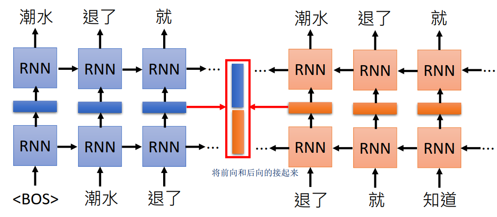
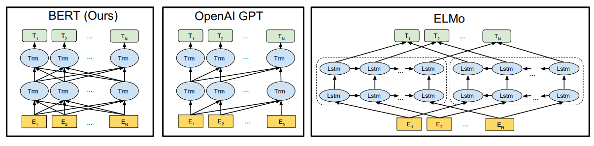
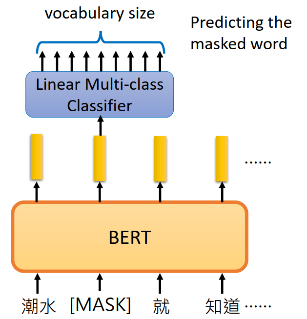
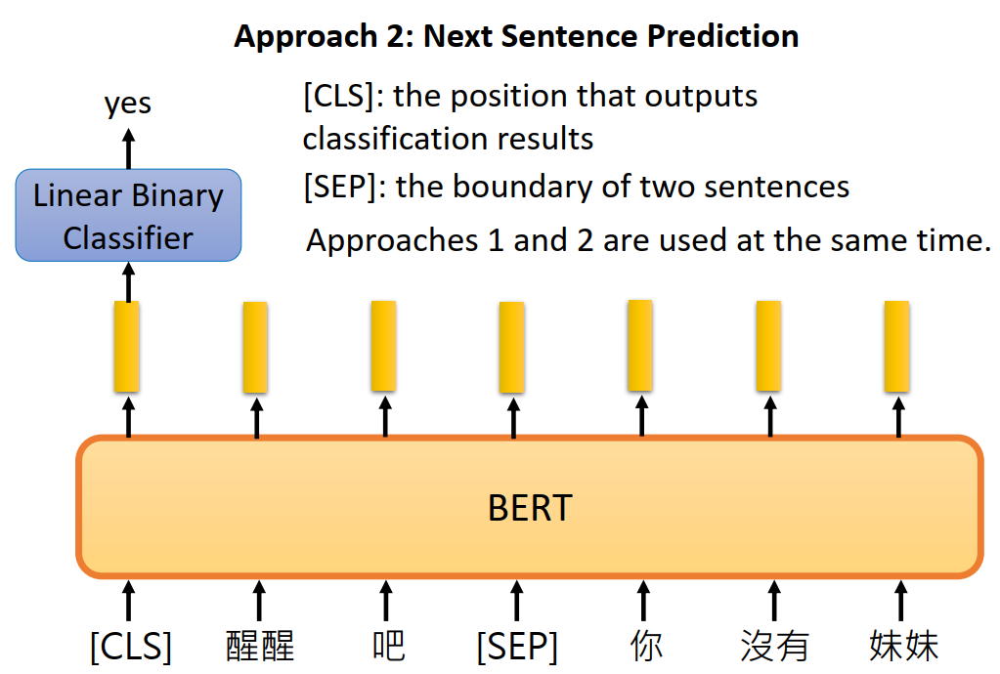
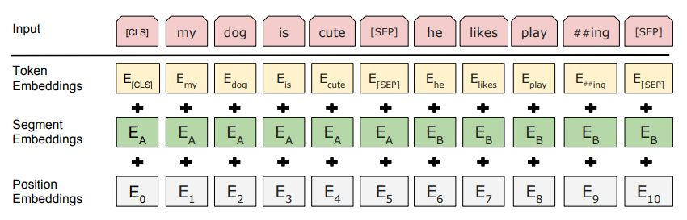
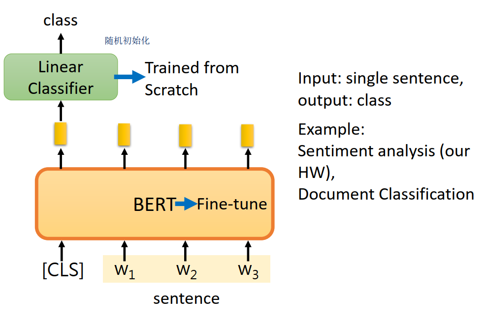
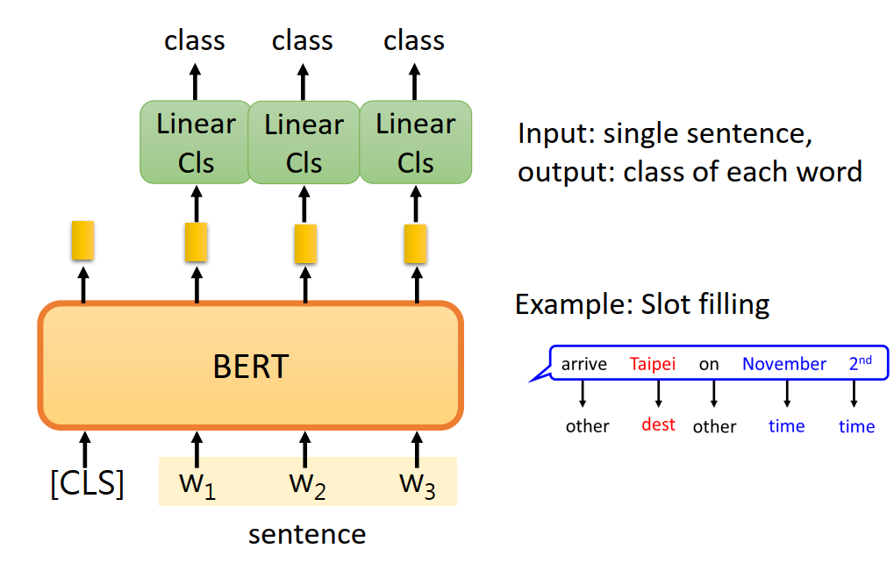
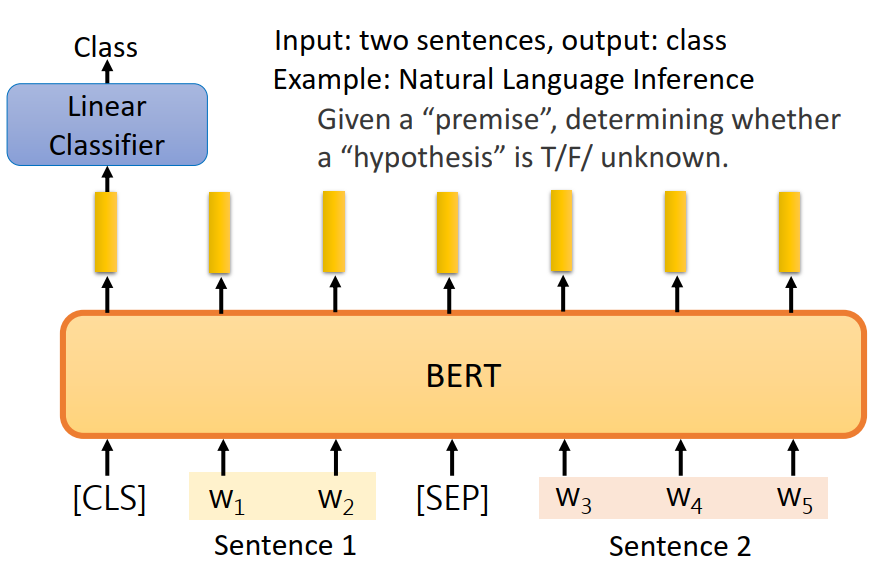
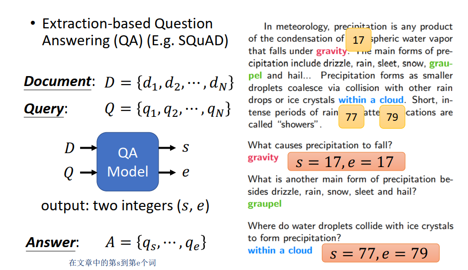
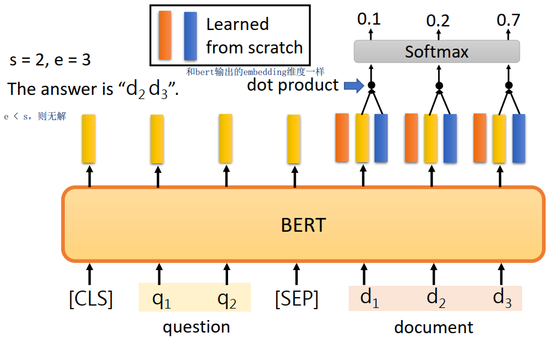

<!DOCTYPE html>


<html lang="en">


<head>
  <meta charset="utf-8" />
   
  <meta name="keywords" content="c,c++,java,python,leetcode,algorithm,reading,life,moods,machine-learning,data-mining,deep-learning,AI" />
   
  <meta name="description" content="一个分享机器学习、算法与数据结构，个人学习心得、读书笔记、生活的博客。" />
  
  <meta name="viewport" content="width=device-width, initial-scale=1, maximum-scale=1" />
  <title>
    【深度学习】BERT |  一个分享机器学习、算法与数据结构，个人学习心得、读书笔记、生活的博客。
  </title>
  <meta name="generator" content="hexo-theme-ayer">
  
  <link rel="shortcut icon" href="/favicon.ico" />
  
  
<link rel="stylesheet" href="/dist/main.css">

  
<link rel="stylesheet" href="https://cdn.jsdelivr.net/gh/Shen-Yu/cdn/css/remixicon.min.css">

  
<link rel="stylesheet" href="/css/custom.css">

  
  
<script src="https://cdn.jsdelivr.net/npm/pace-js@1.0.2/pace.min.js"></script>

  
  

  

<link href="https://cdn.bootcss.com/KaTeX/0.11.1/katex.min.css" rel="stylesheet" /></head>

</html>

<body>
  <div id="app">
    
      
    <main class="content on">
      <section class="outer">
  <article
  id="post-deep-learning-bert"
  class="article article-type-post"
  itemscope
  itemprop="blogPost"
  data-scroll-reveal
>
  <div class="article-inner">
    
    <header class="article-header">
       
<h1 class="article-title sea-center" style="border-left:0" itemprop="name">
  【深度学习】BERT
</h1>
 

    </header>
     
    <div class="article-meta">
      <a href="/deep-learning-bert/" class="article-date">
  <time datetime="2020-04-06T13:50:16.000Z" itemprop="datePublished">2020-04-06</time>
</a> 
  <div class="article-category">
    <a class="article-category-link" href="/categories/study/">study</a> / <a class="article-category-link" href="/categories/study/%E6%9C%BA%E5%99%A8%E5%AD%A6%E4%B9%A0/">机器学习</a>
  </div>
  
<div class="word_count">
    <span class="post-time">
        <span class="post-meta-item-icon">
            <i class="ri-quill-pen-line"></i>
            <span class="post-meta-item-text"> Word count:</span>
            <span class="post-count">2.2k</span>
        </span>
    </span>

    <span class="post-time">
        &nbsp; | &nbsp;
        <span class="post-meta-item-icon">
            <i class="ri-book-open-line"></i>
            <span class="post-meta-item-text"> Reading time≈</span>
            <span class="post-count">8 min</span>
        </span>
    </span>
</div>
 
    </div>
      
    <div class="tocbot"></div>


  
    <div class="article-entry" itemprop="articleBody">
       
  <p>BERT英文全称是：Bidirectional Encoder Representations from Transformers，即双向Transformer的encoder。</p>
<p>BERT提出的时候刷新了11项NLP任务的记录，可以说开创了一个新的时代。</p>
<a id="more"></a>
<p>不熟悉word2vec的和Transformer的可以看我博客相关文章：</p>
<ul>
<li><a target="_blank" rel="noopener" href="https://www.hrwhisper.me/deep-learning-word2vec/">Word2Vec</a></li>
<li><a target="_blank" rel="noopener" href="https://www.hrwhisper.me/deep-learning-attention-is-all-you-need-transformer/">Attention is All You Need : Transformer模型</a></li>
</ul>
<h2 id="词向量对比">词向量对比</h2>
<p>从word2vec到ELMo在到Bert发生了什么变化呢？这里引用<a target="_blank" rel="noopener" href="https://www.cnblogs.com/rucwxb/p/10277217.html">【NLP】彻底搞懂BERT</a>的评价：</p>
<blockquote>
<p>word2vec——&gt;ELMo：</p>
<p>结果：上下文无关的static向量变成上下文相关的dynamic向量，比如苹果在不同语境vector不同</p>
<p>操作：encoder操作转移到预训练产生词向量过程实现</p>
<p>ELMo——&gt;BERT：</p>
<p>结果：训练出的word-level向量变成sentence-level的向量，下游具体NLP任务调用更方便，修正了ELMo模型的潜在问题</p>
<p>操作：使用句子级负采样获得句子表示/句对关系，Transformer模型代替LSTM提升表达和时间上的效率，masked LM解决“自己看到自己”的问题</p>
</blockquote>
<p>下面会讲讲ELMo，然后在讲解BERT</p>
<h2 id="elmo">ELMO</h2>
<p>前面提到过，ELMO会将静态的词转变成上下文相关的动态词向量。</p>
<p>这有什么好处呢？比如体会一下下面几个bank的意思：</p>
<blockquote>
<p>It is safest to deposit your money in the <strong>bank</strong>.</p>
<p>They stood on the river <strong>bank</strong> to fish.</p>
<p>The hospital has its own blood <strong>bank</strong>.</p>
</blockquote>
<p>第一个是银行的意思，第二个则是河畔的意思，第三个则是库存的意思。虽然都是&quot;bank&quot;，但是和使用的上下文有关系，而word2vec学习出来的是静态的向量。</p>
<p>因此，ELMO进行了改进，通过RNN来训练语言模型，即给定上一个TOKEN，来预测下一个token。分别进行前向、后向的训练，将中间的hidden向量拼接起来就得到了词的vector。这是因为RNN输出某个词会考虑前面读过的句子，也就考虑了上下文，因此能得到动态的词向量。（注：这里后向的训练相当于原来句子逆向，比如正向是“潮水退了就知道” 逆向的输如则是“知道就退了潮水”）。</p>
<p></p>
<p>对于多层的RNN，每一层都有隐向量，ELMO的做法是”我全都要“。假设忘了有两层，则会输出两个隐向量（分别是下图黄色和绿色的），ELMO会对他们进行加权相加，具体的权重是通过具体任务学习出来的。</p>
<p></p>
<p>由上面可以看到，ELMO采用了前向和后向两个RNN分别的训练，这是为什么呢？</p>
<p>因为采用双向的RNN会导致”看见答案“的问题（或者说看见自己see itself），以上面的“潮水退了就知道”这个为例，正向的RNN在预测“退了”的时候，会考虑到前面“潮水”的信息，这两个词的信息都被放入了RNN的隐向量中。而如果考虑还有一个反向的RNN，在预测”退了“的时候，会有将要预测的”就“的信息被考虑了进来，这就相当于看到了答案。因此ELMO采用了前向和后向两个RNN分别训练，从而避免了这个问题。</p>
<h2 id="bert">BERT</h2>
<p>BERT主要是预训练+fine tuning，通过在大量的语料库中得到了词的基本表示，然后在具体的任务中进行fine tuning。</p>
<p>BERT的结构如下图左边所示，其基本的单元是transformer的encoder的模块。</p>
<p></p>
<p>回想之前提到的ELMO，是使用两个单向的RNN来代替一个双向的RNN，从而使得不会有看到答案的问题。而GPT是用通过mask得分矩阵避免当前字看到之后所要预测的字，GPT只有正向的，缺失了反向的信息。而BERT呢？采用的是将预测的字用[MASK]字符代替，因此无论你是正向的还是反向的，你都不知道[MASK]这个字符原来的字是什么，只有结合[MASK]左右两边的词语信息来预测，这就达到了用双向模型训练的目的，这个细节会在后面讨论。而还有更新的XLnet模型结合了GPT和BERT的思想，用mask得分矩阵的方法来替代[MASK]这个字符，取得了更好的效果。</p>
<p>下面开始介绍BERT细节的东西。</p>
<h3 id="预训练">预训练</h3>
<p>之所以先讲预训练，而不是模型的输入是因为BERT的训练思想会体现在输入中。训练的部分也是BERT关键创新的部分。</p>
<p>在训练的语料库的选取方面，作者强调<strong>要选用document-level的而不是sentence-level的，从而具备抽象连续长序列特征的能力。</strong></p>
<blockquote>
<p>It is critical to use a document-level corpus rather than a shuffled sentence-level corpus such as the Billion Word Benchmark (Chelba et al., 2013) in order to extract long contiguous sequences.</p>
</blockquote>
<h4 id="masked-lm">Masked LM</h4>
<p>前面提到过，为了防止&quot;看见答案&quot;的问题，BERT将预测的字来进行替代，具体的图如下:</p>
<p></p>
<p>随机选择15%的word，将预测的word用[MASK]字符替代，然后用线性的分类器去预测这个word，避免了”看见答案“的问题，因为无论正向反向都不知道这个word原来是什么，从而迫使模型结合上下文来进行推测，这样就达到了用双向模型训练的目的。</p>
<p>但是这也引入了一个问题，就是预训练和finetuning之间是不匹配的：因为在finetuning期间从未看到[MASK]token。为了解决这个问题，BERT并不总是用实际的[MASK]来替换被mask的词汇，而是：</p>
<blockquote>
<ul>
<li>80% of the time: Replace the word with the [MASK] token, e.g., my dog is hairy ! my dog is [MASK]</li>
<li>10% of the time: Replace the word with a random word, e.g., my dog is hairy ! my dog is apple</li>
<li>10% of the time: Keep the word unchanged, e.g., my dog is hairy ! my dog is hairy. The purpose of this is to bias the<br>
representation towards the actual observed word.</li>
</ul>
</blockquote>
<p>即80%的实际用[MASK]标记替换单词，10%的时间用一个随机的单词替换该单词，还有10％的时间：保持单词不变。这样做的目的是将表示偏向于实际观察到的单词。</p>
<h4 id="next-sentence-prediction">Next Sentence Prediction</h4>
<p>许多重要的下游任务，如问答（QA）和自然语言推理（NLI）都是基于理解两个句子之间的关系，语言建模并没有获得这个关系。因此，为了解决这个问题，提出了Next Sentence prediction训练的方法，如下图所示：</p>
<p></p>
<p>即一开始是一个[CLS]的字符，用来做二分类的输出；两个句子用[SEP]字符进行隔开。在训练时句子A后面跟着的句子B有50%是真实跟在A后面的，也有50%是来自语料库随机的句子。</p>
<h3 id="输入">输入</h3>
<p>BERT的输入如下：</p>
<p></p>
<p>这是三部分的叠加：</p>
<ol>
<li>
<p>Token Embedding，第一个单词是CLS标志，可以用于之后的分类任务</p>
</li>
<li>
<p>Segment Embeddings用来区别两种句子，因为有Next Sentence Prediction的任务</p>
</li>
<li>
<p>Position Embeddings：加入位置信息，和Transformer用三角函数不同，这里的embedding是学习出来的</p>
</li>
</ol>
<h3 id="fine-tuning">Fine Tuning</h3>
<p>前面提到过，BERT在具体任务上会进行fine tuning调整，下面对几种常见的情况做介绍。</p>
<h4 id="single-sentence-classification-task">Single Sentence Classification Task</h4>
<p>BERT做分类fine tuning比较简单，在[CLS]标识符的输出接个线性的分类器即可。如下图所示：</p>
<p></p>
<h4 id="single-sentence-tagging-tasks">Single Sentence tagging tasks</h4>
<p>还有一种如Slot filling的任务，需要对输入的句子的每个词输出其类别，这个也比较简单，在每个词输出的向量用线性分类器就行。</p>
<p></p>
<h4 id="sentence-pair-classification-task">Sentence pair classification task</h4>
<p>接下来的例子稍微复杂一点，给定前提（句子A）和假设（句子B），让你判断给定前提能否推出假设，输出ture/false/unknown。</p>
<p>其实就是三个类别的分类问题，也是在一开始的CLS上接个线性的分类器：</p>
<p></p>
<h4 id="question-answer-task">Question Answer task</h4>
<p>给定文章和问题，要让你输出答案在文章中的开始位置和结束位置（假设答案一定出现在文章中）</p>
<p>具体的做法是将question和document的分别输入bert，然后对每个词都会有一个黄色的vector输出。让模型在学习两个vector（下面的红色和蓝色的），分别用来表示答案开始和结束的位置的向量。红色的和每个黄色的vector进行点层，放入softmax，得到概率最高的就是s，蓝色的同理得到e（若e &lt; s则无解）。</p>
<p></p>
<h2 id="erine">Erine</h2>
<p><a target="_blank" rel="noopener" href="https://zhuanlan.zhihu.com/p/59436589">https://zhuanlan.zhihu.com/p/59436589</a></p>
<h2 id="参考">参考</h2>
<ol>
<li>
<p>李宏毅老师的MLDS</p>
</li>
<li>
<p><a target="_blank" rel="noopener" href="https://zhuanlan.zhihu.com/p/51413773">NLP必读：十分钟读懂谷歌BERT模型</a></p>
</li>
<li>
<p><a target="_blank" rel="noopener" href="https://github.com/codertimo/BERT-pytorch">BERT-pytorch实现</a></p>
</li>
<li>
<p><a target="_blank" rel="noopener" href="https://www.cnblogs.com/rucwxb/p/10277217.html">https://www.cnblogs.com/rucwxb/p/10277217.html</a></p>
</li>
</ol>
 
      <!-- reward -->
      
      <div id="reword-out">
        <div id="reward-btn">
          Donate
        </div>
      </div>
      
    </div>
    

    <!-- copyright -->
    
    <div class="declare">
      <ul class="post-copyright">
        <li>
          <i class="ri-copyright-line"></i>
          <strong>Copyright： </strong>
          
          Copyright is owned by the author. For commercial reprints, please contact the author for authorization. For non-commercial reprints, please indicate the source.
          
        </li>
      </ul>
    </div>
    
    <footer class="article-footer">
       
<div class="share-btn">
      <span class="share-sns share-outer">
        <i class="ri-share-forward-line"></i>
        分享
      </span>
      <div class="share-wrap">
        <i class="arrow"></i>
        <div class="share-icons">
          
          <a class="weibo share-sns" href="javascript:;" data-type="weibo">
            <i class="ri-weibo-fill"></i>
          </a>
          <a class="weixin share-sns wxFab" href="javascript:;" data-type="weixin">
            <i class="ri-wechat-fill"></i>
          </a>
          <a class="qq share-sns" href="javascript:;" data-type="qq">
            <i class="ri-qq-fill"></i>
          </a>
          <a class="douban share-sns" href="javascript:;" data-type="douban">
            <i class="ri-douban-line"></i>
          </a>
          <!-- <a class="qzone share-sns" href="javascript:;" data-type="qzone">
            <i class="icon icon-qzone"></i>
          </a> -->
          
          <a class="facebook share-sns" href="javascript:;" data-type="facebook">
            <i class="ri-facebook-circle-fill"></i>
          </a>
          <a class="twitter share-sns" href="javascript:;" data-type="twitter">
            <i class="ri-twitter-fill"></i>
          </a>
          <a class="google share-sns" href="javascript:;" data-type="google">
            <i class="ri-google-fill"></i>
          </a>
        </div>
      </div>
</div>

<div class="wx-share-modal">
    <a class="modal-close" href="javascript:;"><i class="ri-close-circle-line"></i></a>
    <p>扫一扫，分享到微信</p>
    <div class="wx-qrcode">
      
    </div>
</div>

<div id="share-mask"></div>  
  <ul class="article-tag-list" itemprop="keywords"><li class="article-tag-list-item"><a class="article-tag-list-link" href="/tags/Deep-Learning/" rel="tag">Deep Learning</a></li><li class="article-tag-list-item"><a class="article-tag-list-link" href="/tags/Machine-Learning/" rel="tag">Machine Learning</a></li><li class="article-tag-list-item"><a class="article-tag-list-link" href="/tags/Machine-Learning-model/" rel="tag">Machine Learning model</a></li><li class="article-tag-list-item"><a class="article-tag-list-link" href="/tags/nlp/" rel="tag">nlp</a></li></ul>

    </footer>
  </div>

   
  <nav class="article-nav">
    
    
      <a href="/deep-learning-attention-is-all-you-need-transformer/" class="article-nav-link">
        <strong class="article-nav-caption">下一篇</strong>
        <div class="article-nav-title">【深度学习】Attention is All You Need : Transformer模型</div>
      </a>
    
  </nav>

   
<!-- valine评论 -->
<div id="vcomments-box">
  <div id="vcomments"></div>
</div>
<script src="//cdn1.lncld.net/static/js/3.0.4/av-min.js"></script>
<script src="https://cdn.jsdelivr.net/npm/valine@1.4.14/dist/Valine.min.js"></script>
<script>
  new Valine({
    el: "#vcomments",
    app_id: "fVcjWMD8aI6F0qEfKdUaHa4f-gzGzoHsz",
    app_key: "b26lBsbwmVyxTSnNrsBrnv3U",
    path: window.location.pathname,
    avatar: "monsterid",
    placeholder: "给我的文章加点评论吧~",
    recordIP: true,
  });
  const infoEle = document.querySelector("#vcomments .info");
  if (infoEle && infoEle.childNodes && infoEle.childNodes.length > 0) {
    infoEle.childNodes.forEach(function (item) {
      item.parentNode.removeChild(item);
    });
  }
</script>
<style>
  #vcomments-box {
    padding: 5px 30px;
  }

  @media screen and (max-width: 800px) {
    #vcomments-box {
      padding: 5px 0px;
    }
  }

  #vcomments-box #vcomments {
    background-color: #fff;
  }

  .v .vlist .vcard .vh {
    padding-right: 20px;
  }

  .v .vlist .vcard {
    padding-left: 10px;
  }
</style>

 
     
</article>

</section>
      <footer class="footer">
  <div class="outer">
    <ul>
      <li>
        Copyrights &copy;
        2013-2020
        <i class="ri-heart-fill heart_icon"></i> hrwhisper
      </li>
    </ul>
    <ul>
      <li>
        
        
        
        Powered by <a href="https://hexo.io" target="_blank">Hexo</a>
        <span class="division">|</span>
        Theme - <a href="https://github.com/Shen-Yu/hexo-theme-ayer" target="_blank">Ayer</a>
        
      </li>
    </ul>
    <ul>
      <li>
        
        
        <span>
  <span><i class="ri-user-3-fill"></i>Visitors:<span id="busuanzi_value_site_uv"></span></s>
  <span class="division">|</span>
  <span><i class="ri-eye-fill"></i>Views:<span id="busuanzi_value_page_pv"></span></span>
</span>
        
      </li>
    </ul>
    <ul>
      
    </ul>
    <ul>
      
    </ul>
    <ul>
      <li>
        <!-- cnzz统计 -->
        
      </li>
    </ul>
  </div>
</footer>
      <div class="float_btns">
        <div class="totop" id="totop">
  <i class="ri-arrow-up-line"></i>
</div>

<div class="todark" id="todark">
  <i class="ri-moon-line"></i>
</div>

      </div>
    </main>
    <aside class="sidebar on">
      <button class="navbar-toggle"></button>
<nav class="navbar">
  
  <div class="logo">
    <a href="/"></a>
  </div>
  
  <ul class="nav nav-main">
    
    <li class="nav-item">
      <a class="nav-item-link" href="/">主页</a>
    </li>
    
    <li class="nav-item">
      <a class="nav-item-link" href="/archives">归档</a>
    </li>
    
    <li class="nav-item">
      <a class="nav-item-link" href="/categories">分类</a>
    </li>
    
    <li class="nav-item">
      <a class="nav-item-link" href="/tags">标签</a>
    </li>
    
    <li class="nav-item">
      <a class="nav-item-link" href="/blog-building">博客建设</a>
    </li>
    
    <li class="nav-item">
      <a class="nav-item-link" href="/friend-link">友链</a>
    </li>
    
    <li class="nav-item">
      <a class="nav-item-link" href="/leetcode-algorithm-solution">leetcode题解</a>
    </li>
    
    <li class="nav-item">
      <a class="nav-item-link" href="/messageboard">留言板</a>
    </li>
    
    <li class="nav-item">
      <a class="nav-item-link" href="/about-me">关于我</a>
    </li>
    
  </ul>
</nav>
<nav class="navbar navbar-bottom">
  <ul class="nav">
    <li class="nav-item">
      
      <a class="nav-item-link nav-item-search"  title="Search">
        <i class="ri-search-line"></i>
      </a>
      
      
    </li>
  </ul>
</nav>
<div class="search-form-wrap">
  <div class="local-search local-search-plugin">
  <input type="search" id="local-search-input" class="local-search-input" placeholder="Search...">
  <div id="local-search-result" class="local-search-result"></div>
</div>
</div>
    </aside>
    <script>
      if (window.matchMedia("(max-width: 768px)").matches) {
        document.querySelector('.content').classList.remove('on');
        document.querySelector('.sidebar').classList.remove('on');
      }
    </script>
    <div id="mask"></div>

<!-- #reward -->
<div id="reward">
  <span class="close"><i class="ri-close-line"></i></span>
  <p class="reward-p"><i class="ri-cup-line"></i>请我喝杯咖啡吧~</p>
  <div class="reward-box">
    
    <div class="reward-item">
      
      <span class="reward-type">支付宝</span>
    </div>
    
    
    <div class="reward-item">
      
      <span class="reward-type">微信</span>
    </div>
    
  </div>
</div>
    
<script src="/js/jquery-2.0.3.min.js"></script>


<script src="/js/lazyload.min.js"></script>

<!-- Tocbot -->


<script src="/js/tocbot.min.js"></script>

<script>
  tocbot.init({
    tocSelector: '.tocbot',
    contentSelector: '.article-entry',
    headingSelector: 'h1, h2, h3',
    hasInnerContainers: true,
    scrollSmooth: false,
	scrollSmoothDuration: 420,
    scrollContainer: 'main',
    positionFixedSelector: '.tocbot',
    positionFixedClass: 'is-position-fixed',
    fixedSidebarOffset: 'auto',
	collapseDepth: 2,
  });
</script>

<script src="https://cdn.jsdelivr.net/npm/jquery-modal@0.9.2/jquery.modal.min.js"></script>
<link rel="stylesheet" href="https://cdn.jsdelivr.net/npm/jquery-modal@0.9.2/jquery.modal.min.css">
<script src="https://cdn.jsdelivr.net/npm/justifiedGallery@3.7.0/dist/js/jquery.justifiedGallery.min.js"></script>

<script src="/dist/main.js"></script>

<!-- ImageViewer -->

<!-- Root element of PhotoSwipe. Must have class pswp. -->
<div class="pswp" tabindex="-1" role="dialog" aria-hidden="true">

    <!-- Background of PhotoSwipe. 
         It's a separate element as animating opacity is faster than rgba(). -->
    <div class="pswp__bg"></div>

    <!-- Slides wrapper with overflow:hidden. -->
    <div class="pswp__scroll-wrap">

        <!-- Container that holds slides. 
            PhotoSwipe keeps only 3 of them in the DOM to save memory.
            Don't modify these 3 pswp__item elements, data is added later on. -->
        <div class="pswp__container">
            <div class="pswp__item"></div>
            <div class="pswp__item"></div>
            <div class="pswp__item"></div>
        </div>

        <!-- Default (PhotoSwipeUI_Default) interface on top of sliding area. Can be changed. -->
        <div class="pswp__ui pswp__ui--hidden">

            <div class="pswp__top-bar">

                <!--  Controls are self-explanatory. Order can be changed. -->

                <div class="pswp__counter"></div>

                <button class="pswp__button pswp__button--close" title="Close (Esc)"></button>

                <button class="pswp__button pswp__button--share" style="display:none" title="Share"></button>

                <button class="pswp__button pswp__button--fs" title="Toggle fullscreen"></button>

                <button class="pswp__button pswp__button--zoom" title="Zoom in/out"></button>

                <!-- Preloader demo http://codepen.io/dimsemenov/pen/yyBWoR -->
                <!-- element will get class pswp__preloader--active when preloader is running -->
                <div class="pswp__preloader">
                    <div class="pswp__preloader__icn">
                        <div class="pswp__preloader__cut">
                            <div class="pswp__preloader__donut"></div>
                        </div>
                    </div>
                </div>
            </div>

            <div class="pswp__share-modal pswp__share-modal--hidden pswp__single-tap">
                <div class="pswp__share-tooltip"></div>
            </div>

            <button class="pswp__button pswp__button--arrow--left" title="Previous (arrow left)">
            </button>

            <button class="pswp__button pswp__button--arrow--right" title="Next (arrow right)">
            </button>

            <div class="pswp__caption">
                <div class="pswp__caption__center"></div>
            </div>

        </div>

    </div>

</div>

<link rel="stylesheet" href="https://cdn.jsdelivr.net/npm/photoswipe@4.1.3/dist/photoswipe.min.css">
<link rel="stylesheet" href="https://cdn.jsdelivr.net/npm/photoswipe@4.1.3/dist/default-skin/default-skin.min.css">
<script src="https://cdn.jsdelivr.net/npm/photoswipe@4.1.3/dist/photoswipe.min.js"></script>
<script src="https://cdn.jsdelivr.net/npm/photoswipe@4.1.3/dist/photoswipe-ui-default.min.js"></script>

<script>
    function viewer_init() {
        let pswpElement = document.querySelectorAll('.pswp')[0];
        let $imgArr = document.querySelectorAll(('.article-entry img:not(.reward-img)'))

        $imgArr.forEach(($em, i) => {
            $em.onclick = () => {
                // slider展开状态
                // todo: 这样不好，后面改成状态
                if (document.querySelector('.left-col.show')) return
                let items = []
                $imgArr.forEach(($em2, i2) => {
                    let img = $em2.getAttribute('data-idx', i2)
                    let src = $em2.getAttribute('data-target') || $em2.getAttribute('src')
                    let title = $em2.getAttribute('alt')
                    // 获得原图尺寸
                    const image = new Image()
                    image.src = src
                    items.push({
                        src: src,
                        w: image.width || $em2.width,
                        h: image.height || $em2.height,
                        title: title
                    })
                })
                var gallery = new PhotoSwipe(pswpElement, PhotoSwipeUI_Default, items, {
                    index: parseInt(i)
                });
                gallery.init()
            }
        })
    }
    viewer_init()
</script>

<!-- MathJax -->

<script type="text/x-mathjax-config">
  MathJax.Hub.Config({
      tex2jax: {
          inlineMath: [ ['$','$'], ["\\(","\\)"]  ],
          processEscapes: true,
          skipTags: ['script', 'noscript', 'style', 'textarea', 'pre', 'code']
      }
  });

  MathJax.Hub.Queue(function() {
      var all = MathJax.Hub.getAllJax(), i;
      for(i=0; i < all.length; i += 1) {
          all[i].SourceElement().parentNode.className += ' has-jax';
      }
  });
</script>

<script src="https://cdn.jsdelivr.net/npm/mathjax@2.7.6/unpacked/MathJax.js?config=TeX-AMS-MML_HTMLorMML"></script>
<script>
  var ayerConfig = {
    mathjax: true
  }
</script>

<!-- Katex -->

<!-- busuanzi  -->


<script src="/js/busuanzi-2.3.pure.min.js"></script>


<!-- ClickLove -->

<!-- ClickBoom1 -->

<!-- ClickBoom2 -->

<!-- CodeCopy -->


<link rel="stylesheet" href="/css/clipboard.css">

<script src="https://cdn.jsdelivr.net/npm/clipboard@2/dist/clipboard.min.js"></script>
<script>
  function wait(callback, seconds) {
    var timelag = null;
    timelag = window.setTimeout(callback, seconds);
  }
  !function (e, t, a) {
    var initCopyCode = function(){
      var copyHtml = '';
      copyHtml += '<button class="btn-copy" data-clipboard-snippet="">';
      copyHtml += '<i class="ri-file-copy-2-line"></i><span>COPY</span>';
      copyHtml += '</button>';
      $(".highlight .code pre").before(copyHtml);
      $(".article pre code").before(copyHtml);
      var clipboard = new ClipboardJS('.btn-copy', {
        target: function(trigger) {
          return trigger.nextElementSibling;
        }
      });
      clipboard.on('success', function(e) {
        let $btn = $(e.trigger);
        $btn.addClass('copied');
        let $icon = $($btn.find('i'));
        $icon.removeClass('ri-file-copy-2-line');
        $icon.addClass('ri-checkbox-circle-line');
        let $span = $($btn.find('span'));
        $span[0].innerText = 'COPIED';
        
        wait(function () { // 等待两秒钟后恢复
          $icon.removeClass('ri-checkbox-circle-line');
          $icon.addClass('ri-file-copy-2-line');
          $span[0].innerText = 'COPY';
        }, 2000);
      });
      clipboard.on('error', function(e) {
        e.clearSelection();
        let $btn = $(e.trigger);
        $btn.addClass('copy-failed');
        let $icon = $($btn.find('i'));
        $icon.removeClass('ri-file-copy-2-line');
        $icon.addClass('ri-time-line');
        let $span = $($btn.find('span'));
        $span[0].innerText = 'COPY FAILED';
        
        wait(function () { // 等待两秒钟后恢复
          $icon.removeClass('ri-time-line');
          $icon.addClass('ri-file-copy-2-line');
          $span[0].innerText = 'COPY';
        }, 2000);
      });
    }
    initCopyCode();
  }(window, document);
</script>


<!-- CanvasBackground -->


    
  </div>
</body>

</html>